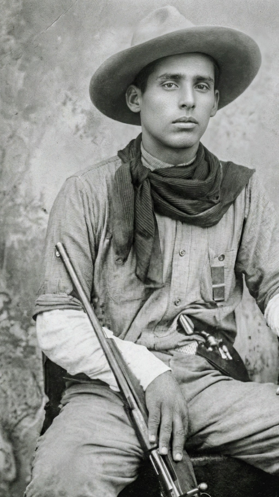

O Gaudério da Fronteira
O afilhado de Getúlio Vargas e lendário capitão da fronteira. Um acervo digital imersivo dedicado à preservação de sua história.
Silvino Hermiro Jacques nasceu em 17 de fevereiro de 1906, em São Borja, RS. Filho de Leão Pedro Jacques e Máxima de Sant\'Anna, cresceu em uma família tradicional fronteiriça.
Ingressou na Brigada Militar, mas sua vida mudou radicalmente em 1929 após um incidente em Santo Ângelo que o tornou foragido. Fugindo para o Norte, serviu como Capitão legalista para seu padrinho, Getúlio Vargas, na Revolução de 1932.
Silvino era um homem de palavra e poesia. Suas "Décimas" registravam suas façanhas. Ele protegeu famílias e combateu rivais políticos, criando quase um estado paralelo na zona de fronteira entre o Brasil e o Paraguai.
Tombou em combate em maio de 1939 na Fazenda Aurora. Sua história permanece viva na memória oral como um herói popular, o último dos gaudérios da fronteira.
O Gaudério da Fronteira
Voz: Gerson Jacques
Entrevista Oral (1992)
Música Regional
Se algum dia por acaso, não possa eu cantar vitória, que meus inimigos me matem, e assim cheio de glória eu peço a meus amigos que leiam a minha história.
— TRECHO DAS DÉCIMAS ORIGINAIS
DESLIZE PARA O LADO →
Passe o mouse (ou toque) para ampliar os registros originais.

Silvino Jacques • 1906
Pais de Silvino • 1905

Irmão Miguel Jacques • 1909

O Capitão
DESLIZE PARA VER OS LOCAIS →
DESLIZE PARA VER OUTROS PARALELOS →
Diz a lenda que Silvino tinha pacto. As balas batiam em seu peito e caíam no chão.
Documentos provam que ele foi ferido várias vezes. Sobrevivia por táticas militares e proteção.
Relatos de que enterrava ouro das revoluções em locais secretos da fronteira.
Não há registros de fortuna. Morreu deixando poucos bens materiais para a família.
A ideia de que roubava apenas dos ricos para dar aos pobres da região.
Atuava por interesses políticos e de clãs. Protegia seus aliados, mas cobrava caro dos rivais.
Boatos de que não morreu em 39 e fugiu para viver anônimo no Paraguai.
O corpo foi identificado, fotografado e o óbito registrado oficialmente após o cerco na Aurora.
Nasce Silvino Jacques.
Brasil: Presidente Rodrigues Alves consolida a República Velha e o Convênio de Taubaté valoriza o café.
Fuga do RS após incidente em Santo Ângelo.
Brasil: Crise econômica mundial (Quebra da Bolsa de NY) enfraquece a oligarquia cafeeira, preparando terreno para a Revolução de 30.
Capitão na Revolução Constitucionalista.
Brasil: Guerra Civil em São Paulo contra o governo provisório de Vargas.
Morte na Fazenda Aurora.
Brasil: Auge do Estado Novo (Ditadura Vargas). Fim do cangaço e banditismo rural. Mundo à beira da 2ª Guerra Mundial.

O Afilhado de Getúlio
Deslize para ver de onde veio o Silvino →
"Sua família guarda algum objeto, fotografia ou relato oral sobre Silvino Jacques? Ajude-nos a manter viva a história da fronteira."
Muito obrigado por contribuir com a preservação da história da fronteira. Entraremos em contato em breve pelo WhatsApp ou E-mail.